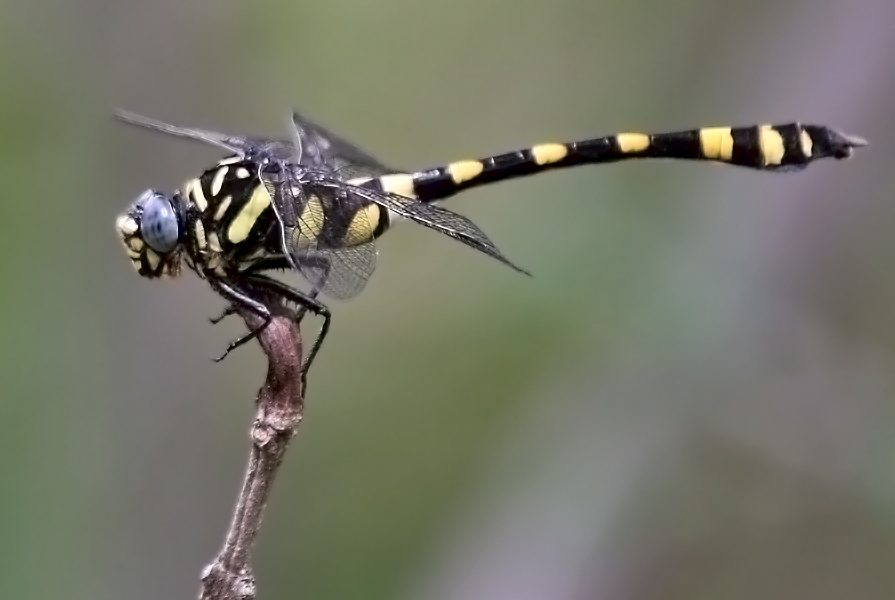

कॉमन क्लबटेलCommon Clubtail
Ictinogomphus rapax · Gomphidae · INS-0145

- Scientific name वैज्ञानिक नाम
- Ictinogomphus rapax (Selys, 1854)
- Family कुल
- Gomphidae
- Hindi हिंदी
- कॉमन क्लबटेल
- Local names स्थानीय नाम
- common clubtail, clubtail
- Status here यहाँ की स्थिति
- native
- Movement आवागमन
- Resident, here all year
- Known from कहाँ दर्ज
- Others have published records from the wider Awadh–Purvanchal plain, none yet from Basti–Ayodhya अवध–पूर्वांचल से दूसरों के प्रकाशित अभिलेख, बस्ती–अयोध्या से अभी नहीं
- IUCN IUCN
- not evaluated
- Review समीक्षा
- audited and independently read
When to look कब देखें
Present all year. साल भर मौजूद।
कॉमन क्लबटेल / Common Clubtail
Ictinogomphus rapax (Selys, 1854) — Gomphidae
कॉमन क्लबटेल — एक मध्यम आकार की असली व्याधपतंग (dragonfly, not damselfly), जिसका शरीर पीला-हरा और काले रंग का है। इसका नाम इसकी विशिष्ट "club-shaped" पूँछ (abdomen) से आता है, जो सिरे की ओर फूली हुई होती है। यह नदियों और तेज़ बहने वाली धाराओं में पाई जाती है, जहाँ पत्थरीली ज़मीन हो। वयस्क हवा में तेज़ी से उड़ते हैं और बड़े कीटों को शिकार करते हैं।
Quick Identification त्वरित पहचान
| Feature | Description |
|---|---|
| Size | Medium dragonfly (body 45–50 mm; wingspan 60–68 mm) |
| Build | Robust; wings held open at rest (true dragonfly, not damselfly) |
| Colour | Yellow-green thorax with black markings; black abdomen with yellow spots |
| Abdomen tip | Characteristic club shape — dilated and swollen at tip |
| Eyes | Large, meeting at top of head (unlike damselflies) |
| Behaviour | Strong, fast flight; aggressive; perches on rocks and ground |
Field tip: The strongly clubbed (dilated) abdomen tip is diagnostic. This is a strong flier found only on flowing rivers and streams with rocky substrates, not on ponds or still water.
Morphology आकारिकी
Biometrics:
| Measurement | Range |
|---|---|
| Body length | 45–50 mm |
| Hindwing length | 30–35 mm |
| Wing span | 60–68 mm |
Adult male: Thorax yellow-green to brownish-green with black longitudinal stripes. Head yellow-green with black markings. Eyes large, dark brown, meeting at top of head. Abdomen black with yellow spots and bands on segments 1–5, becoming increasingly club-shaped toward the tip; segments 8–10 are markedly dilated and form the characteristic club. Wings transparent with dark pterostigma.
Adult female: Similar to male but slightly larger and less strongly colored; abdominal club less pronounced.
Dragonfly key characters: Wings held open at rest; eyes meeting at top of head; large compound eyes; robust, well-developed flight apparatus.
Behaviour & Ecology व्यवहार और पारिस्थितिकी
Ictinogomphus rapax is a strong-flying dragonfly of fast-moving rivers and streams. It requires clean, well-oxygenated flowing water with rocky or gravelly substrates. Adults are highly aggressive, defending territories along the water's edge, and hunting larger flying insects than most damselflies. They perch on rocks, sand banks, or the ground and make rapid sorties to snatch prey.
The species is an indicator of clean, flowing water and is sensitive to pollution and habitat modification (damming, siltation).
Larval Stage
Naiads are robust, brown, well-camouflaged on rocky substrates. They are benthic (bottom-dwelling) and adapted to strong water flow. Larval duration is approximately 10–12 months. Emergence occurs primarily in spring (March–May) and post-monsoon (September–October).
Life Cycle / Phenology जीवन चक्र
| Stage / Season | Event |
|---|---|
| Egg (1–2 weeks) | Laid in flowing water; sink to substrate |
| Naiad (10–12 months) | On rocky bottom; predatory on aquatic invertebrates |
| Emergence (spring/autumn) | Peaks March–May and September–October |
| Adult (2–3 weeks) | Territorial; hunts large insects; long-lived for dragonflies |
| Seasonality | Year-round presence; peaks in warm seasons |
Host Plants or Prey आहार
Adult prey:
- Small flies and midges
- Mosquitoes
- Small dragonflies and damselflies
- Flying ants and termites
- Small butterflies
Larval prey:
- Aquatic insect larvae (chironomids, mayflies)
- Small crustaceans
- Oligochaete worms
Predators / Natural Enemies शत्रु
- Birds: Kingfishers, bee-eaters, small eagles
- Large dragonflies: Larger Gomphid species
- Spiders: Large river-margin spiders
- Fish: Large predatory fish
Agricultural / Human Relevance कृषि प्रासंगिकता
Not documented as an agricultural pest. Large flying adults may benefit irrigation systems and rivers by controlling flying insects. The presence of healthy clubtail populations indicates good river health and is valued by river conservationists and ecological monitors.
Expected Locally स्थानीय रूप से अपेक्षित
Not a field record. Written from published accounts for eastern Uttar Pradesh. No confirmed local sighting yet — if you have seen it, that is what the atlas needs.
अभी तक स्थानीय पुष्टि नहीं। यह विवरण प्रकाशित स्रोतों से है, किसी अवलोकन से नहीं।
GBIF holds published records from the wider Awadh–Purvanchal plain, none yet from Basti–Ayodhya. Expected on flowing rivers and large streams with rocky or gravelly substrates throughout eastern UP, particularly in tributary and main-stem Ganges drainage. Look for a medium-sized dragonfly perching on rocks or sand banks with wings open, showing the characteristic club-shaped abdomen. A photograph showing the clubbed abdomen tip and the river habitat, with date and location, would confirm a local record.
Distribution वितरण
Global range: South and Southeast Asia; widespread from Pakistan and India to Myanmar, Thailand, and Indonesia.
In India: Common in plains and foothill rivers.
In Uttar Pradesh: Recorded in various river systems.
In Basti district / eastern UP: Expected in the Rapti, Gogra, and other flowing tributaries of the Ganges; unconfirmed locally.
Research Questions शोध प्रश्न
Anyone can investigate these | कोई भी इन प्रश्नों की जाँच कर सकता है
- How does the water flow speed affect clubtail dragonfly density? — Compare populations in fast vs. slow sections of the same river.
- कितने समय में अंडे से नई मक्खी बनती है? (How long from egg to adult?) — Rear naiads from eggs; record development time.
- क्या यह प्रजाति प्रदूषण के प्रति संवेदनशील है? (Is this species sensitive to pollution?) — Observe presence/absence in polluted vs. clean river sections.
- What proportion of prey is captured mid-air vs. gleaned from substrate? — Observe foraging behavior; count capture modes.
- How does substrate type (rocky, sandy, silted) affect larval density? — Collect naiads from different substrate types; compare numbers.
Similar Species मिलती-जुलती प्रजातियाँ
| Species | Key Difference | हिंदी |
|---|---|---|
| Other Gomphidae (e.g., Gomphus spp.) | Various body lengths and club shapes; Gomphus species are smaller and lack the strong club | दूसरी clubtail प्रजातियाँ |
| Large Anisopteran dragonflies | Wings held open (same as clubtail), but lack the club-shaped abdomen | बड़ी व्याधपतंग |
| Damselflies | Wings held closed (not open); much smaller; eyes separated | सूतिका कीटें |
Field rule: Medium-sized dragonfly with wings held open at rest, characteristic strongly club-shaped (dilated) abdomen tip, on flowing river with rocks or gravel substrate.
Taxonomy & Classification वर्गीकरण
Original description. Selys Longchamps described Ictinogomphus rapax in 1854. Type locality: India. The genus Ictinogomphus comes from Greek: icthys (fish) + gomphus (clubtail), indicating a fish-like clubtail. The species name rapax (Latin: rapacious, predatory) refers to its hunting behavior.
Subspecies. Monotypic.
Family and order placement. Order Odonata, suborder Anisoptera (dragonflies), family Gomphidae (clubtails). Gomphidae is characterized by the club-shaped abdomen.
Phylogenetic notes. Ictinogomphus is a primarily Oriental genus of clubtails. I. rapax is one of the larger, more robust members of the family.
IUCN status rationale. Listed as Least Concern (LC). The species has a broad range and stable populations in intact river systems.
Photo Gallery फोटो गैलरी
No photos yet — add field photos to media/species/common_clubtail/ and run node scripts/sync_photos.js.
Photos needed आवश्यक फोटो
- [ ] Adult male showing the characteristic club-shaped abdomen
- [ ] Dorsal view showing coloration and markings
- [ ] Habitat (river with rocks)
References संदर्भ
- Selys Longchamps, E. de (1854). Synopsis des Gomphines. Bulletin de la Société Entomologique de Belgique.
- Fraser, F.C. (1933). The Fauna of British India, including Ceylon and Burma. Odonata, Vol. 2. Taylor & Francis, London.
- Subramanian, K.A. (2005). Dragonflies and Damselflies of Peninsular India — A Photographic Guide. Vigyan Prasar, New Delhi.
- Prasad, M. & Varshney, R.K. (1995). A checklist of the Odonata of India. Oriental Insects, 29(1): 385–428.
- IUCN SSC Odonata Specialist Group. (2024). Ictinogomphus rapax. IUCN Red List of Threatened Species. Ver. 2024.
- GBIF Occurrence Data — Ictinogomphus rapax, Asia (2010–2025).
Source file: species/fauna/insects/common_clubtail.md